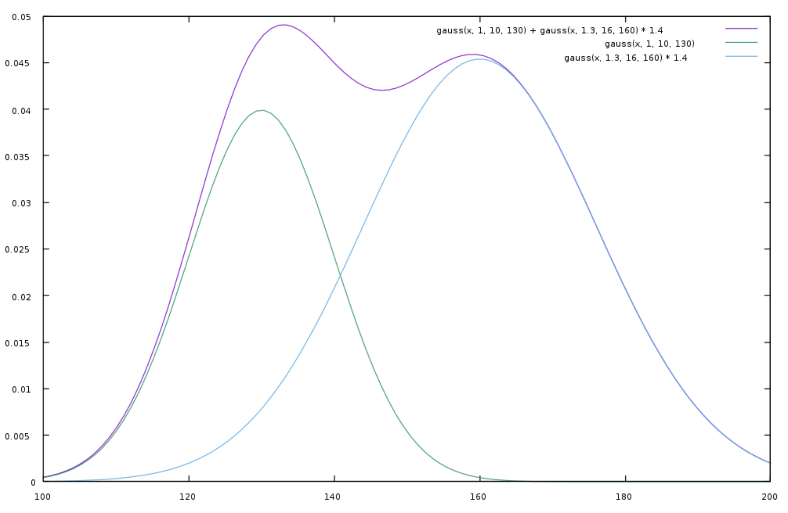

A Grand Father Clock & a Silver Cord
Published on 2024-06-21
This article originally appeared as the chapter "A Grand Father Clock & a Silver Cord" in Peace, like Solomon Never Knew. It describes a prophetic celestial clock hidden in the pages of Ecclesiastes. This clock not only identifies key developments in the history of Western Civilization, it assigns them to the correct century.
Before the Silver Cord is Severed
The Apostle Paul pronounced one of the greatest pare same message can produce the opposite response, depending on who hears it.
For we are to God the pleasing aroma of Christ among
those who are being saved and those who are perishing.
To the one we are an aroma that brings death; to the other,
an aroma that brings life. And who is equal to such a task?
- 2 Corinthians 2:15-16, NIV
During the past year I sniffed the pleasant aroma in Ecclesiastes as God’s plan opened up to me. He is shepherding His church to full maturity and peace, to a happily ever after. That is not how everyone sees it; it is not how I used to see it. Like a fractal built from many copies of the same pattern repeated at larger and larger scales, the times of Ecclesiastes 3 tell another story. They tell the story of a world that is perishing. They spread an aroma of death.
Ah, those verses we long to avoid! When I thought this book was complete, I stepped back to see if I missed anything important in Ecclesiastes. I saw my omission. Short shrift was given to the first half of chapter 12. Those lines poetically tick off the failing of our faculties and the wearing out of our bodies, one organ at a time.
Remember him—before the silver cord is severed,
and the golden bowl is broken;
before the pitcher is shattered at the spring,
and the wheel broken at the well,
and the dust returns to the ground it came from,
and the spirit returns to God who gave it.
- Ecclesiastes 12:6-7, NIV
Scholars agree on the meaning of many of the analogies, but the silver cord tantalizes. Is it the spinal cord? That would mean numbness, spasms, uncontrolled pain and ultimately paralysis. Is it the cord tied around the neck of the bride and groom at an ancient wedding ceremony, but buried when one spouse dies? Ecclesiastes 4:12 did speak of the threefold cord not easily broken. However, the one that resonates with me is the invisible thread tethering soul to body, an image I used in one of my novels. When it is cut, our time is up.
A Tripartite Life
In “Rightly Dividing the Words”, the Grand Index looked at every occurrence of the phrase “under the sun”. Then it was claimed that the phrase divided the book into intelligible pieces and exposed the structure. However, the last use of that phrase is in the fifth verse of chapter ten! Using that phrase as sole guide only works if you only want to follow a person from birth to maturity. The teacher doesn’t stop. He marches us all the way to the grave.
What is the larger structure? It is not so tidy as twenty- eight times of equal length. From experience and from chapters ten though twelve, a solution arises. Life is divided in three sections:
- Ascending Years (birth to maturity, in twenty-eight times, up to age 49)
- Productive Years (age 50-61)
- Declining Years (62+)
Chapter ten is all about work, promotions, hiring subordinates, and dealing with your boss and prominent rich people. That captures our productive years nicely as we rise in status in our careers. Chapter eleven moves on to managing investments, a preoccupation of people nearing retirement. It then judges the results of those years like a P&L statement. Finally, chapter twelve confronts old age, senility, failing health and death. Life divides into three parts: growth, work, and decline.
The twenty-eight times of Solomon’s Sundial have been well substantiated and are clearly delineated with the phrase “under the sun”. We shall see that the final years are also well marked. The latter part of chapter eleven and the bulk of chapter twelve are divided in three by the word “remember”. It is a time for looking back, reflecting, and preparing one’s heart for the end. That leaves the middle section, chapter ten. Dividing that into coherent pieces challenged me for days.
Why set the age ranges as above? Partly because that is as I found them in the text. One could hope for nice round numbers, but those age ranges are what we got. This writer hoped that the timetable would match the measure from the Psalms:
Our days may come to seventy years,
or eighty, if our strength endures;
yet the best of them are but trouble and sorrow,
for they quickly pass, and we fly away.
- Psalm 90:10, NIV
Delving deeper, the “unroundness” of the numbers explained itself: it was measuring not the average life of seventy, nor the blessed life of eighty, nor Genesis’ life-limit of one hundred twenty. Like Methuselah, whose life measured the delay before the Great Flood, the pattern in Ecclesiastes measures a particular life. It marks out the years of Solomon.
Solomon was promised a long life if he remained faithful. He failed. As his life ended abruptly at an odd and unsymmetrical length, so shall our world. How long did Solomon live? Trust me: we need to know.
Solomon is the Measure of All Things
hornton, D. “When was Solomon born?” (2020) Referenced on April 6, 2021 from https://hermeneutics.stackexchange.com/questions/51218/how-old-was-solomon-when-he-became-king
Counting the years of Solomon’s life is a puzzle that has confounded many historians. Estimates range from the fifties on up to Josephus’ eighty. Pastor D. Thornton made a commendable effort, so we will go with his analysis from When was Solomon born?. Thornton’s chronology takes as a given that David and Solomon each reigned forty years. The question then becomes one of discovering in which year of David’s reign Solomon was born.
- (7) David reigned seven years in Hebron before conquering Jerusalem and moving the Ark there.
- (3) David defeated the Arameans, then “in the course of time” (2 Samuel 10:1) battled the Ammonites. Thornton estimates this period between battles as a minimum of three years.
- (1) “In the spring” (2 Samuel 11:1) David cohabited with Bathsheba. Thornton argues that this happened the following year, the eleventh year (7 + 3 + 1) of David’s reign.
- (1) The first child died as a baby the following year, or later.
- (4) Four more children were born (Shammua, Shobab, Nathan and Solomon, according to 1 Chronicles 3:5), with Solomon being the last. If they were born a year apart, that makes four years, and Solomon was born in the 16th year of David’s reign or later:
- 16 = 7 + 3 + 1 + 1 + 4
Thus, since David reigned 40 years, Solomon would be 40 – 16 = 24 years old or younger when he became king. Adding his reign of forty years leads to an estimate of sixty- four years for the span of Solomon’s life. Since Thornton’s estimates are conservative, if any of the events were spaced out further, then Solomon would have been born later, hence lived fewer years. We shall adopt an age at death for Solomon of sixty-three years and several months.
Where has the number sixty-three popped up before? Oh, yeah. There will be sixty-three hundred years from the creation to the end of the age. If a man of wisdom died after sixty-three years, shall a world that thinks itself wise come to an end after sixty-three centuries?
Ecclesiastes has more to tell us.
A Tripartite Book
When speaking about the seven pieces of peace (the Harvest Pattern ), six years were assigned to each set of four times, which brings us to maturity at age 42, not 49. This agreed well with the number forty-two that popped up throughout the book. However, cultural bias played a part. In America, students graduate high school and can vote at age eighteen, so ending the “emotional control” phase at 3 x 6 = 18 years made sense. Nevertheless, age 21 is when we permit young people to drink. Our culture tried other arrangements, but legislation cannot not change certain human behaviors. Impulse control needs a few more years.
For similar reasons the third phase was said to begin at age 12, before puberty. It might be better to put the crisis that propels a person into the next phase at the end of one phase and not the beginning of the next. Moving backwards further, age seven is called the age of accountability, when the moral sense begins to sharpen in children.
Different people mature at different rates, so we have latitude. Let us recast the seven stages of life to each last seven years. (Fortunately, no earlier prophetic structures relied on the stages lasting six years.) That brings the loyalty stage and the time of peace to a close at age 49. That is a significant number, the number of years in a jubilee cycle. In ancient Israel, every forty-nine years all debts were to be cancelled and all slaves freed. Such an event would breathe new life into a person, giving them strength to advance to the next phase of life.
Once mature, the next phase of life lasts a dozen years, the most productive years of a person’s working life, bringing us to age 61. The three phases that follow are fungible: fortunate and well-prepared people can stretch them out, while others see their trials multiply rapidly. On Solomon’s schedule they came in rapid succession:
- Days of darkness, crisis and fearful trials (age 62)
- Rapid decline in mental and physical abilities (age 63)
- Death (just before age 64)
These life segments break Ecclesiastes into pieces like so:
- Beginning
- 1:1–9:18. Birth to Maturity.
- 10:1-4. Comparison of where the foolish and wise person stand at midlife.
- Middle
- 10:5–10:20. Activities of the Established worker.
- 11:1-6. Assessment of the fruitfulness of the foolish and wise person late in life.
- End
- 11:7-10. Remember the days of darkness.
- 12:1-5. Remember your creator, as your health declines.
- 12:6-8. Remember him before the silver cord is severed. Prepare to die.
- 12:9-14. Final exhortation to fear God.
Our earlier clock started the twenty-eight times in 960 BC, when Solomon dedicated the temple in Jerusalem. That clock stopped in 2280 AD, at the end of the 27th era, the time of war, though possibly extending into the beginning of the time of peace. That clock showed Israel and the church being raised up from infancy to full maturity, ready for what God has prepared next. That story ends on an up note. If Ecclesiastes is also to tell the story of a world aging, losing its faculties, declining and dying, it must conceal a clock that runs on a different schedule. This clock starts at the beginning.
Tripartite Time
How long are the the divisions on this clock? If Solomon lived a few months past sixty-three and our other clocks run out in 6300 AM (2280 AD), then each year of Solomon’s life corresponds to a century. How fitting! One hundred years is 10 x 10, and ten is the human number of completeness. By our decimal numbering system we have a fondness for thinking of history in units of centuries. It explains why finding the other patterns is hard. Regular periods of 119, 120, or 240 years or the irregular periods found in the other clocks do not synch well with how we learned history from our textbooks.
Since we love to think in centuries, the Lord saw fit to make it challenging to fit centuries to Ecclesiastes. Only by recognizing that the twenty-eight times form seven groups and each group covers seven years of a person’s life can we make headway.
28 times -> 7 stages of life -> 49 years -> 49 centuries
By this logic, one “time” on this clock lasts 4,900 years divided by 28, or 175 years. How does that factor?
175 = 5 x 5 x 7
With five representing the harvest, repeating it twice means a complete harvest, and multiplying that by seven (divine completeness) conveys the idea of all the harvests coming in. The only appearance of the number 175 in scripture is as the length of Abraham’s life. The main confirmation that it is a meaningful length of time is in the prophecies it reveals, which we shall get to shortly. The number’s main utility is in providing a rationale and a name for the clock. Abraham is the father of many nations. He is a type of God the Father, prepared to offer his son for the life of the world. Thus we shall call this Solomon’s Grand Father Clock.
The former clock in Ecclesiastes started with the construction of the Temple of Solomon. The temple was a place for sacrifice. Since Jesus was the greatest and final sacrifice, that clock centered on the life of the Son of God, a veritable Son-dial. That clock stops with the completion of the twenty-eight times; it ends when Christ’s body, the church, reaches maturity. This one is different. As we shall later investigate, if Ecclesiastes has a Grand Father Clock that starts when God fathered creation (at the beginning of time) and a Son-dial (that begins when the temple was dedicated), does it also conceal a clock centered on the Holy Spirit starting from a third historical event? Time will tell.
As we age, our sense of time changes. The years seem to pass faster. Thus it is with this final clock. The “times” of youth last 175 years, but the times that follow last but a century. The outline is:
- Growth Years: 28 periods of 175 years (4900 years total)
- Middle Years: 12 periods of 100 years (1200 years total)
- Declining Years: 2 periods of 100 years (200 years total)
- Death: 1 period of less than a century (likely 30-50 years)
Note that we have forty-two complete periods followed by a partial period. (How I love that number!)
This book has already sifted through history, selected events that are prophetically significant and described them. There is no need to repeat that. This walk through history shall stop only to explain events or trends not previously noted. See now how Solomon stretched out his mind and reached all the way to the edge of eternity, but not into it...
Growth Years (4020 BC – 880 AD)
In the Bible, the early years of history are sparse in details. Thus for the first two stages of life (existence and function) we shall match historical events to the entire 700 year period for the stage instead of to individual corresponding 175-year times. After that, we match each time to its 175-year period.
One implication of this is that for the period from 960 BC to 880 AD, each year can be slotted into two “times”, one from the earlier Solomon’s Clock and one from this Grand Father clock. If there are two times tugging at the world, might that not cause the friction and confusion we experience when we try to decipher history? One time is applied to the Body of Christ coming of age and the other is applied to a world aging and dying. Birth and death are intermixed.
To use an analogy from data science, you might propose that the facts of Ecclesiastes present a Gaussian mixture model. Two bell-curves with different centers are superimposed upon one another. In its tangled form, such a curve looks like a camel with two humps. The challenge is to untangle the data points and cluster them into one or the other of the two camel humps. The first hump is the world, which peaks earlier and falls off. The second hump is the church, which peaks later.

We already identified the features relevant to the church’s maturation. Now let’s do it for the world.
Security / Existence (4020–3320 BC)
A time to be born: Adam & Eve created, Cain & Abel born.
A time to die: Adam & Eve died spiritually, Cain slew Abel – the first human to die physically.
A time to plant: Cain planted the crops he offered as sacrifice, and following his exile, built the first city. (Genesis 4:17)
A time to uproot: Adam & Eve expelled from Eden. Cain becomes a “restless wanderer” in the land of Nod, which means wandering. (Genesis 4:14-16)
This was the age when humanity came into existence. The assignment of these four “times” is incontestable as all four were manifest for the first time in history.
Ability / Function (3320–2620 BC)
A time to kill: Lamech boasts of killing a young man in a spirit of vengeance. (Genesis 4:23-24)
A time to heal: Noah was born during this time. His name means “to bring relief” or “to comfort”.
A time to tear down: Genesis 6:1-4 describes the corruption of the righteous line of Seth in a baffling passage about the Nephilim, heroes of renown thought by some to be the giant offspring of demons.
A time to build: Lamech’s sons are credited with inventions such as tent making, bronze and iron working, and musical instruments and advances in animal husbandry. (Genesis 4:20-22)
This time is one of irony. The purpose of this stage of life is to grow in one’s mental and physical capabilities. However, it was the evil line of Cain whose minds grew sharpest. And it was the products of mixed marriages between the good and evil peoples that corrupted the morals of the line of Seth. Whatever the Nephilim were, they were strong in body, strong in courage, admired by men but about to be torn down by God.
Stability / Emotions (2620–1920 BC)
A time to weep (2620–2445 BC): “The LORD regretted that he had made human beings on the earth, and his heart was deeply troubled.” (Genesis 6:6, NIV) In this era, it is the Lord that wept.
A time to laugh (2445–2270 BC): God destroyed the earth by flood. It is written that the Lord “laughs at the wicked” (Psalm 37:13), so surely he laughed as he destroyed his enemies. Sadly, another man’s laughter provoked a terrible curse. Ham mocked his father’s nakedness and so Noah cursed him and his offspring with a life of slavery. (Genesis 9:20-27)
If you consult the corresponding “under the sun” passage for “a time to laugh” (as per the “Son-dial”), this is what you find:
And I saw something else under the sun:
In the place of judgment—wickedness was there,
in the place of justice—wickedness was there.
I said to myself,
“God will bring into judgment
both the righteous and the wicked,
for there will be a time for every activity,
a time to judge every deed.”
I also said to myself,
“As for humans, God tests them so that they
may see that they are like the animals.
Surely the fate of human beings is like that
of the animals; the same fate awaits them both:
As one dies, so dies the other. All have
the same breath; humans have no advantage
over animals. Everything is meaningless.
- Ecclesiastes 3:16-19, NIV
The striking thing is that this word of judgement applies to both man and beast. The Flood of Noah is the only judgment by God that is intimately concerned with both human and animal life.
A time to mourn (2270–2095 BC): We mourn when we lose something precious. Mankind lost its unity. God ruined the Tower of Babel, confused the tongues of men, and scattered the peoples, bringing about many races and cultures that would henceforth war against one another in distrust and enmity.
A time to dance (2095–1920 BC): Out of all those peoples, God found a man of faith and called to Abram to leave his home and go to the land that He would show him. Dancing is about expressing joy. We rejoice at the end, when at last we possess what we longed for. God rejoices at the beginning, because He can see the end from the beginning. When Abraham believed God and it was credited to him as righteousness, surely the angels danced! David, Christ, apostles, church – all became possibilities when Abraham’s faith gave birth to Isaac.
Amity / Relationships (1920–1220 BC)
A time to scatter stones (1920–1745 BC): These were the years of the wandering of Abraham, Isaac and Jacob. Abraham separated from Lot, Isaac from Ishmael, and Jacob from Esau. The family was scattered.
A time to gather stones (1745–1570 BC): Joseph rose to leadership in Egypt and aided by God’s providence as expressed in a seven-year famine, gathered Jacob and his brothers to join him there.
A time to embrace (1570–1395 BC): Finally, in Moses and Joshua, the people of Israel find leaders whom they could embrace, men who wholeheartedly embraced God. In the “Son-dial”, the corresponding “under the sun” passage includes these verses:
The sleep of a laborer is sweet,
whether they eat little or much,
but as for the rich, their abundance
permits them no sleep.
I have seen a grievous evil under the sun:
wealth hoarded to the harm of its owners,
or wealth lost through some misfortune,
so that when they have children
there is nothing left for them to inherit.
- Ecclesiastes 5:12-14, NIV
Two groups of people are contrasted. The laborers (the Hebrew slaves) can sleep well, because God rescues them from bondage. The rich (the Egyptians), cannot sleep for fear of retaliation by the people they oppress. When Moses led the people out of Egypt, it says that they plundered the Egyptians, who gave them gifts of gold and other precious things out of fear of the God who had ravaged their nation. This wealth given away was then not available to be inherited by their children, many of whom had already died in the plague on the firstborn.
A time to refrain (1395–1220 BC): During the time of the Judges, relationships between the tribes were strained once more.
The first lesson God was teaching Abraham and his descendants during this stage was forgiveness, without which all relationships fray and break. It is the climax of Genesis, when Joseph forgave his brothers. It is the climax of Job (who lived in this era), when he forgave his friends. It was what saved Israel from God’s unrestrained wrath in the desert, when Moses pleaded with God to spare the people after they disobeyed.
The second lesson was shared suffering, which bound the people together. It was the years in Egypt and the desert that made them a nation even before they owned an acre of land.
Opportunity/ Resources (1220–520 BC)
A time to search (1220–1045 BC): From the period of the Judges through the disastrous reign of Saul, the people searched desperately for a strong leader.
A time to give up (1045–870 BC): They gave up their search when David was anointed by Samuel. Sadly, the nation would later give up their unity in a civil war.
A time to keep (870–695 BC): Israel was lost to Assyria, but God kept Judah, under the godly reigns of Hezekiah and Josiah.
A time to throw away (695–520 BC): Judah threw away their last chance so God threw them away, into exile.
These were the years when first Israel and then Judah possessed the greatest opportunities and material resources. What did it avail them?
Community / Communication (520 BC–180 AD)
A time to tear (520–345 BC): Jews like Esther had been torn away from their homeland, yet played their part in preserving the people in exile.
A time to mend (345–170 BC): The fallout from Alexander’s conquest was the more benign rule of the Ptolemies, which permitted Judah to rebuild and recover. They began to translate the Old Testament into Greek and Jewish culture spread.
A time to be silent (170 BC–5 AD): These were the years of silence between the Testaments, when there were no prophets in Israel. The Septuagint was completed, giving more people access to the words God had already spoken. They studied them hoping to understand what God was up to. Many of the people became thirsty to hear again from God.
A time to speak (5–180 AD): The Word of God became flesh and sent his apostles to spread his message to the world.
When I saw how these four times of communication aligned with history, my doubts concerning the validity of this clock vanished. If you compare this clock to the former one, the progression is clear. Here we have Jesus presenting the Gospel to the Jews. In the Son-dial, it was the era when Christian missionaries shared the Gospel with the greater part of the world.
In the “Son-dial”, the time to speak and the time to love center around these verses:
Go, eat your food with gladness,
and drink your wine with a joyful heart,
for God has already approved what you do.
Always be clothed in white, and always
anoint your head with oil. Enjoy life
with your wife, whom you love, all the days
of this meaningless life that God has given
you under the sun— all your meaningless days.
For this is your lot in life and in your
toilsome labor under the sun. Whatever your
hand finds to do, do it with all your might,
for in the realm of the dead,
where you are going, there is neither
working nor planning nor knowledge nor wisdom.
- Ecclesiastes 9:7-10, NIV
In that clock, we applied this passage to the missionary age, when the church would work its hardest to spread the gospel to the world. In this clock, it applies to Jesus. The food and wine are the Last Supper. The phrase “anoint your head with oil” identifies the person as the Christ, which means “anointed one”. Next, the wife is the bride of Christ – the church – which came into being at that time. As for “the realm of the dead”, that speaks of our Lord’s crucifixion and descent into Hell. So you see, Solomon again nailed the Lord’s coming down to the right century.
Loyalty (180–880 AD)
A time to love (180–355 AD): With Constantine’s embrace of Christianity, the greatest threat to the church was nullified. In His love, God gave Rome to his people as their possession.
A time to hate (355–530 AD): This era saw the sack of Rome in 410 AD and its fall in 476 AD. Civil war and a growing divide between the eastern and western halves of the empire spelled division.
A time for war (530–705 AD): Chief among the martial disasters of this era was the First Islamic Jihad, costing the Byzantine Empire most of the Middle East. A time for peace (705–880 AD): The eastern frontier stabilized and the west became unified under Charlemagne and his successors. Christianity spread throughout most of Europe. The close of the seventh and final Ecumenical Council meant that orthodox Christian doctrine was completely defined – it was mature.
As the great empire fractured, something never before seen in the annals of history arose. For all the wars and political struggles, all the language and cultural divisions, the people of a continent gave their loyalty to one man who had died but rose again. What would that loyalty accomplish?
Productive Years (880 – 2080 AD)
At this point the Grand Father Clock strikes ten – chapter ten. This chapter of Ecclesiastes is all about work. To break it into pieces we do not have “under the sun” as an easy delimiter as we did for the times, nor the word “remember” as we will find in the next section. Instead, each part concerns a single facet of work. The sections range from half a verse to four verses in length. Each is a parable of great subtlety.
In an earlier chapter, the opening of the seals of Revelation was likened to the pulling down of scaffolding to reveal a new building. The old political, religious, economic and cultural systems were torn away to reveal the new. Along the same vein, this chapter describes the building of a great house. Forgive me for updating the analogies.
Note: Solomon also used the metaphor of a house prophetically in Psalm 127, as explored in “Appendix D: To Number our Psalms”.
Hiring the GC (880–980 AD).
There is an evil I have seen under the sun,
the sort of error that arises from a ruler:
Fools are put in many high positions,
while the rich occupy the low ones.
I have seen slaves on horseback,
while princes go on foot like slaves.
- Ecclesiastes 10:5-7
To begin, we need a GC – a general contractor. Once people reach their most productive years, recruiting, interviewing and hiring competent and trustworthy people is a vital concern. In these verses, Solomon tells us that from the start, things wouldn’t go well. From Pope Sergius III to Pope John XII, the selection of church leaders succumbed to the murderous scheming of Theodora and Marozia during the "rule of the harlots". Spiritually, this was one of the darkest times for the church.
This era is known for one significant positive event. Near the beginning of the tenth century, in Aleppo, Syria, the Aleppo Codex was written by Jewish scholars. This was the most important and influential copy of the Masoretic Text of the Old Testament to be created. Descendants of that text influenced the translation of the King James Bible.
Digging the Foundation (980–1080 AD).
Whoever digs a pit may fall into it...
- Ecclesiastes 10:8a
Trench collapse is a common cause of injury and death in construction. Two decades ago, fifty workers a year died in the trenches in the US, prompting OSHA to conduct a major study and tighten standards. One discovery was that at many job sites, the supervising engineer never bothered to ascertain the soil type before planning the excavation. Knowing the soil type is one of the most crucial factors in understanding and mitigating risk. Jesus preached a whole sermon on the importance of knowing what type of soil each person is: beaten path, rocky, thorny or good. Jesus would have made a good construction engineer. This verse, however, talks about a different kind of pit: schism. In 1054, the Great Schism finally and irrevocably split the church into East and West. The English word schism comes from the Greek σχίσµα, which means division, cleft, fissure, or break. The fissure that opened up between the two halves of Christendom would lead to the death or suffering of millions. The cost of digging the foundation for our house was great.
Demolition & Site Prep (1080–1180 AD).
... whoever breaks through a wall may be bitten by a snake.
- Ecclesiastes 10:8b
During excavation, the remains of previous construction may be uncovered. Old walls will have to be demolished and hauled out of the pit. In this case, the walls needing to be breached during the construction of Christendom were the walls of Jerusalem during the First Crusade. The snakes biting the workers were the soldiers of the Caliphate, the empire associated with the seventh beast of Revelation. Recall that with Satan bound for a thousand years beginning in 380 AD, he is held behind a wall. If you reach into his prison, he will bite! The Christian kingdoms had been hemmed in for centuries by the relentless expansion of Islam, but now they broke through the wall. However, was it Christians breaking in, or Satan angling for a way to break out?
Deliveries & Masonry Work (1180–1280 AD).
Whoever quarries stones may be injured by them...
- Ecclesiastes 10:9a
A modern work site sees an endless stream of trucks dropping off supplies. The masonry work may require marble, granite, brick, natural stone or cinder blocks. This verse, about quarrying stone, is the most on-the-nose verse in the chapter. This century was the peak of the age of church building. Many of the great cathedrals were constructed during this century. It is estimated that during this phase of the establishment of Christendom, more stone was quarried for churches than was used for all the pyramids and temples of Ancient Egypt combined.
Not only buildings, but also vital church institutions were built during this century. Religious orders like the Franciscans, Dominicans, Carmelites, and Augustinians trace their founding to this time.
Sadly, many of the common people who built the church died at its hands due to injustice. During the Fourth Crusade, Christian killed Christian when Constantinople was sacked. The Inquisition began in 1184 AD and the Albigensian Crusade was launched against the Cathars, killing tens of thousands.
During the Albigensian Crusade, a French Cistercian monk named Arnold Amalric acted as the Pope’s representative. When the crusaders reached Beziers, a soldier asked Amalric how they would distinguish between the townspeople that were Catholics and the ones that were Cathars. Amalric is reputed to have answered, “Kill them all. God will recognize his own.” Over time, this has been paraphrased as “Kill them all and let God sort them out.” And that is how the builders were injured at their own quarry.
Carpentry & Framing (1280–1380 AD)
... whoever splits logs may be endangered by them.
If the ax is dull and its edge unsharpened,
more strength is needed,
but skill will bring success.
- Ecclesiastes 10:9b-10, NIV
With the base of the building done, we can frame the exterior and interior walls. In this verse, the emphasis is on working with dull tools. What are those tools? Intellect. Leadership. Coordination and cooperation. Character. Public order. All were deficient during this tumultuous century, forcing select people of ability to envision new ways to organize society.
The Black Death was the shattering tragedy that forced the issue, killing off half of Europe or more. The Avignon Papacy (1309-1378 AD) had the Pope flee Rome for most of the era, as well as having multiple popes claiming the title at once. In the intellectual sphere, scholastic theology was an attempt to sharpen the church’s reason and carry it beyond the ideas of the ancient world. Some of its results led in wrong directions and made faith complex and unintelligible to the masses. Also, this cerebral approach prompted opposition to the East’s focus on Hesychasm, a personal, spiritual relationship with God. This era also saw substantial development toward modern nation-states, the interior walls between the new countries arising out of old Rome. All in all, old, dull tools were being discarded in search of sharp new ones to handle a new age.
Zoning, Payables & Receivables (1380–1480 AD)
If a snake bites before it is charmed,
the charmer receives no fee.
- Ecclesiastes 10:11
All of a sudden, the work stops. The electrician wants to be paid up front but your bridge loan wasn’t approved by the bank. The neighbors at the zoning board meeting complain about increased traffic, site drainage, and the height of the flag pole. The town building inspector says the building code changed and the roof trusses must be spaced closer. The bricklayers union goes on strike. It would be so easy to just burn it down and collect the insurance...
This period began with the Western Schism (with more multiplications of popes battling for legitimacy from 1378-1416 AD) and only got worse, as Constantinople fell to the Turks in 1453 AD. After a thousand years of confinement, Satan slipped his bonds and broke out of prison in 1380 AD. Don’t pay the snake charmer: he fell asleep on the job.
(Every eschatological system assigns a different time to the imprisonment and release of Satan. The strength of the system in this book is that the same event shows up in many clocks at the same corresponding time, reinforcing this assertion.)
Marketing (1480–1580 AD).
Words from the mouth of the wise are gracious,
but fools are consumed by their own lips.
At the beginning their words are folly;
at the end they are wicked madness—
and fools multiply words.
No one knows what is coming—
who can tell someone else what will happen after them?
The toil of fools wearies them;
they do not know the way to town.
- Ecclesiastes 10:12-15
It is finally time to list the property with realtors. Can the house we are building be successfully sold by the folks on the TV show Million Dollar Listing? Before the open house, it is smart to fill the rooms with furniture, hang a few pictures, place vases of fresh cut flowers and cover the kitchen island with tapas. During this century, the church filled its house by plundering the New World of gold, silver, firs, potatoes, tomatoes, maize and chocolate, fruits of the Colombian Exchange.
However, the phrase from Ecclesiastes that best describes this time is “fools multiply words”. At the close of the previous century, Gutenberg created his first press (1439 AD) and printed his first Bible (1455 AD). Sure, the Chinese already had moveable type, but they used ceramic type, which didn’t hold the ink well, and used water-based paints, which bled and faded fast. Gutenberg invented type metal, an alloy of lead, tin and antimony, which was durable but also easily moldable and held the ink well. Gutenberg had access to oil paints developed during the High Renaissance. From them he designed an oil-based ink vastly superior to the water-based inks used before him. On top of that, he constructed a special type matrix that enabled a printer to create new fonts or special symbols rapidly.
As the century of this era dawned, printing presses popped up all over Europe. Writing and literacy expanded. Now the fools (and the wise) had their market for writing more than just Bibles. The Protestant Reformation shook the world. Books and pamphlets filled with every sort of innovation in philosophy, religion, economics and politics found an audience and the explosion of ideas led to real explosions as wars gripped the world. The Age of Marketing had begun.
Negligent Subcontractors (1580–1680 AD).
Woe to the land whose king was a servant
and whose princes feast in the morning.
- Ecclesiastes 10:16
The property may be up for sale, but the subcontractors are still working their way through the final punch list. Some of them cut corners to finish in time – or so they could head to the pub for a drink.
This century was convulsed by the General Crisis that swept across Europe, Asia, North and South America, and parts of Africa. Leaders had to contend with the poor climate of the Little Ice Age, inflationary pressure from bulk importation of silver from the Americas, religious controversy flowing from the Reformation and the clamoring of the poor for freedom and justice. Emblematic of this century was a man from the very bottom of the aristocracy (and by income, initially below it) who rose to command a great nation. Oliver Cromwell led the revolution that toppled – and executed – the King of England. That revolution did spell woe to England for decades, as this servant who displaced their king served an extremist agenda that nearly brought the nation to ruin.
Conscientious subcontractors (1680–1780 AD).
Blessed is the land whose king is of noble birth
and whose princes eat at a proper time—
for strength and not for drunkenness.
- Ecclesiastes 10:17, NIV
After you fire the negligent contractors, you hope their replacements do a better job. Many kings and queens of the eighteenth century embraced the enlightenment. They freed serfs, established colleges for women, protected religious minorities, funded public health measures and pursued other notable reforms. Among their ranks were Joseph II, Holy Roman Emperor, Catherine the Great of Russia and Frederick the Great of Prussia – the three great enlightenment monarchs. Their lands truly were blessed.
Roofing & Maintenance (1780–1880 AD).
Through laziness, the rafters sag;
because of idle hands, the house leaks.
- Ecclesiastes 10:18
The house is complete, the title transferred and the family all moved in. Now the owners are responsible for it going forward. Will they be attentive or neglectful? The article Why Monarchy? The Rise and Demise of a Regime Type by Gerring et al has the answer.
Two visuals in the article tell the story. In Europe, starting in 1790 AD, the number of monarchies in the world began to plummet, partially as a result of consolidation into fewer nation states. By 1870, this wave washed over the rest of the world. Starting in 1920 AD (in the fallout from World War I) the number of non-monarchies surged. All these kingdoms – these royal houses – sagged and then collapsed.
Furnishing & Feasting (1880–1980 AD).
A feast is made for laughter,
wine makes life merry,
and money is the answer for everything.
- Ecclesiastes 10:19
For the house that stands, the diligent owners enjoy a year of ease. They fill their house with luxuries and celebrate life. During this century the material wealth of the world increased vastly – twenty-fold by some measures. Sadly, it has spawned generations more convinced than ever that “money is the answer for everything”.
Privacy (1980–2080 AD).
Do not revile the king even in your thoughts,
or curse the rich in your bedroom,
because a bird in the sky may carry your words,
and a bird on the wing may report what you say.
- Ecclesiastes 10:20
As couples get older, they like to relax in the privacy of their home among trusted friends. Privacy is what this century is tossing aside, leading to hate, cancel culture, unforgiveness, and violence. For us “the bird in the sky” is a spy satellite or plane and “a bird on the wing” is a drone or a nosy bystander with a cell phone. The surveillance state and its private version, the social network, intrude more each year. The “time of hate” is almost upon us, but its tools are in place and being wielded by an emboldened elite seeking to destroy their enemies at all costs.
We have been warned:
the most important skills to develop during the
coming years are diplomacy and tact.
These tools of oppression would be destructive enough in the hands of rational, mentally stable people in full possession of their faculties. However, that is not the sort of people who will inherit them. The world is going senile. What would Orwell’s 1984 be like if Big Brother had Alzheimer’s? We are about to see...
IRS Audit.
Ship your grain across the sea;
after many days you may receive a return.
Invest in seven ventures, yes, in eight;
you do not know what disaster may come upon the land.
- Ecclesiastes 11:1-2
In “Winding the Clock”, a comprehensive analysis of this passage and much of the rest of Ecclesiastes 11 was presented. There the “ventures” were interpreted as centuries (consistent with this clock). The auditor’s report was that seven full centuries plus part of an eighth from the past millennium would be productive, and so they were. A few came near the start (the morning) and the rest towards the end (the evening). As Solomon said,
“Sow your seed in the morning,
and at evening let your hands not be idle,
for you do not know which will succeed
whether this or that, or
whether both will do equally well.”
- Ecclesiastes 11:6
Those eight ventures are complete. Will we earn enough from our savings and investment to last us through retirement? In case you were thinking of working past retirement age, remember what Jesus said:
As long as it is day,
we must do the works of him who sent me.
Night is coming, when no one can work.
- John 9:4
Declining Years (2080 – 2280 AD) & Death (?)
From the middle of the eleventh chapter through the end of the twelfth, we have the world’s years of decline. Everything written in this book so far has come to pass. We must accept what Ecclesiastes has to say about the times to come and not fight against it. The wise will find a way to obey God, find comfort in His word and fruitfulness in their work even in dire times, because the church is not going to die; it will emerge from the wreckage of this world strong and in the prime of life. Choose your loyalties carefully; they will be tested.
The years going forward are approximate. Medical science may prolong life greatly, at God’s sufferance, and extend one of these times. He may also cut them short.
As I write this page, the funeral of Prince Philip has just concluded. The journalists interspersed video of the proceedings with memories of his life. We should take time to remember our own lives and all the history that has passed. Remember, learn and prepare.
The Days of Darkness (2080–2180 AD)
Light is sweet,
and it pleases the eyes to see the sun.
However many years anyone may live,
let them enjoy them all.
But let them remember the days of darkness,
for there will be many.
- Ecclesiastes 11:7-8
This tells us that there will be days of light ahead, but the dark days will multiply.
Everything to come is meaningless.
You who are young,
be happy while you are young,
and let your heart give you joy
in the days of your youth.
Follow the ways of your heart
and whatever your eyes see,
but know that for all these things
God will bring you into judgment.
- Ecclesiastes 11:9
Though the Teacher tells us the days ahead are meaningless, that is not entirely so. Days lived in obedience to God will not be meaningless, but the days lived by worldly people will. There is also a paradox in the charge to “follow the ways of your heart”. I cringe every time I hear a pop song or show tune that tells people to follow their heart. Following the ways of a bad heart will lead to judgment.
So then, banish anxiety from your heart
and cast off the troubles of your body,
for youth and vigor are meaningless.
- Ecclesiastes 11:10
Thanks to advances in medical science, this next century may be the first when people can “cast off the troubles of [their] body”. What a tragic waste it will be when millions, cured of complex ailments, are left with a fit body but a withered soul that cannot make meaningful use of it.
The Days of Decline (2180–2280 AD)
Remember your Creator
in the days of your youth,
before the days of trouble come
and the years approach when you will say,
“I find no pleasure in them”—
before the sun and the light
and the moon and the stars grow dark,
and the clouds return after the rain...
- Ecclesiastes 12:1-2
If the previous century afforded people ample access to meaningless pleasure, in this one pleasure will be impossible to find. For an ordinary person during most of history, the analogies here and in the succeeding verses are clear. Time is running out (sun, moon & stars), though some commentators maintain this refers to the face, now wrinkled and robbed of the glory of its former beauty. Eyesight is failing, plagued by cataracts and clogged with tears. In succeeding verses, “the keepers of the house” that tremble are feeble hands, and the strong man that stoops is a bad back and wobbly legs. The grinders that are few are your teeth, and so it goes to the end of the passage.
How will God apply this parable to the world? We saw that chapter ten was not just an OSHA manual about worker safety. It was a real analogy to history, to the systematic construction of a civilization. So it shall be here. The allusions are not merely poetic, but prophetic. If it describes troubles in the city and troubles in the country, so it shall be. If the grinders are few and the pitcher at the well breaks, it may indicate a failure in the water supply, in irrigation systems and the whole agricultural system.
Verse 5 seems clearest. It says that “people are afraid of heights and of dangers in the streets”. This indicates widespread crime and violence. Most people will lose the courage to face the trials of life. They will lose all ambition to climb the heights of accomplishment because the chaos around them voids all prospect of success. *“Then people go to their eternal home and mourners go about the streets.” * The rising death toll will claim so many friends and family that mourning will become an everyday thing.
A careful study of every phrase in this chapter could reveal more about events in those latter days. I haven’t the heart for it. The people described in chapter twelve try to find pleasure apart from God, but end up with judgment and mourning. Only the wise who willingly tarry at the House of Mourning early in life and learn what it has to teach are prepared for those days. Those trials will sadden but not destroy people of faith. The song of birds may grow faint to some, but the ears of faith will never miss the strains of the final trumpet, when Christ comes for his own.
In previous clocks and the first two stages of this one, it was matching historical events to Scripture that made the duration of each period clear. These events are yet to come and so we cannot ascertain their meaning, considering that even having all of past history spread out before me did not make many prior correlations obvious. Though the meaning may be elusive, we nevertheless have hope of comprehending the timing.
The growth years comprised 4,900 years, or 700 years times seven phases of growth. That translates to one hundred jubilee cycles of forty-nine years each.
The productive years will have comprised 1,200 years. Though we divided it as twelve centuries, it may also be expressed as ten generations of 120 years each, a unit we have seen before.
Within the declining years, how will God divide this second century? If the first verse is an introduction and the latter part of verse 5 (“Then people go to their eternal home and mourners go about the streets”) is a concluding statement, that leaves fourteen word pictures:
- two in verse 2 (beauty gone, storm clouds),
- four in verse 3 (weak hands & legs, lost teeth, poor eyesight),
- four in verse 4 (closed mouth, chewing, skittish, poor hearing), and
- four in verse 5 (fear of falling, white hair, shuffling walk, no desire).
If each picture corresponds to seven years, that makes ninety-eight years, or two complete jubilee cycles. That leaves two years of the century for people to “go to their eternal home”.
Back to the jubilee cycle. Scholars argue about whether it lasts forty-nine or fifty years. Some have seven weeks of seven years (forty-nine) for the sabbath cycle, then the fiftieth as the jubilee year. Then they split again on their opinion, with some saying that the jubilee year doubles as the first year of the next cycle but others saying the jubilee year is outside the sabbath cycle. This is like it was with the generations, where in one place the period is 120 years that do not overlap but in another they overlap, making for 119 years between the start of one generation and the start of the next. What do we get if we instead choose fifty years as a jubilee cycle?
- The growth years occupy 98 jubilee cycles
- The productive years last 24 cycles
- The declining years last 4 more cycles
- 126 jubilee cycles in all.
In that case the fourteen events of chapter twelve, verses 2-5 last two jubilee cycles. The first seven images last forty- nine years plus one jubilee year and the second seven the same, for a nice round century. Much tidier, no?
What can we make of the number 126?
126 = 2 x 3 x 3 x 7
We have the numbers for the Son, the Father (twice), and the Holy Spirit. What else? When I saw the number 126, I immediately thought of Psalm 126, whose inscription is “A song of Ascents.”
When the LORD restored the fortunes of Zion,
we were like those who dreamed.
Our mouths were filled with laughter,
our tongues with songs of joy.
Then it was said among the nations,
“The LORD has done great things for them.”
The LORD has done great things for us,
and we are filled with joy.
Restore our fortunes, LORD,
like streams in the Negev.
Those who sow with tears
will reap with songs of joy.
Those who go out weeping,
carrying seed to sow,
will return with songs of joy,
carrying sheaves with them.
- Psalm 126:1-6, NIV
The people of Judah would sing this song while climbing the hill leading up to Jerusalem, to celebrate their deliverance. Recall that when I was young, I dreamt about climbing a hill that leads to heaven. This Psalm has it all – dreaming, climbing, and the whole harvest cycle. Twice it speaks of sowing seed (which is Jesus, the Word) and twice of reaping a harvest. There are streams in the desert – the Holy Spirit watering our hearts to promote growth. Four times it speaks of joy (the fruit of the Holy Spirit), once of laughter, and the audience is the whole world.
I found this Psalm after my many months of meditating on Habakkuk and when I met Janet Sullivan, this Psalm became my reality. At that time I carried seed to her (Christian music and a few minutes of Bible reading), I went out weeping, but minutes later was filled with joy and reaped a spiritual harvest.
Yes, Psalm 126 can be likened to the great harvest at the end of the age. On that day, we shall ascend.
The Day of Death (?)
Would you have the courage to go on living if you knew in advance the day of your death? The Lord calls us to such courage.
Teach us to number our days,
that we may gain a heart of wisdom.
- Psalm 90:12, NIV
It is July, 2021 as I write. The CDC just reported that in 2020, life expectancy in the US declined by 1.5 years, the steepest drop since World War II. The causes are COVID-19, overdoses from synthetic opioids and suicide. The government is numbering our days. Actuaries are numbering our days. However, before them all, Solomon numbered his own days.
This chapter proposed and supported the conjecture that Solomon lived sixty-three years and a few months. He mirrored in his life the principles in his book: forty-nine years to mature, twelve at work, and almost three to reflect before death claimed him. Did he know years in advance that he would never reach his sixty-fourth birthday? Did he figure out the divine riddle hidden in his own words?
The numbering of days is more than counting. It is planning, apportioning, reflecting, and evaluating – and gratitude for however many they may be. In this more important sense, Solomon is our teacher. He counted those days carefully. He judged the days he wasted and the days he flourished and his restless mind sought a path to peace. To ponder his mixture of success and failure can be discouraging. The antidote is to marvel at the magnitude of the blessings Christ has showered upon his children. By the Holy Spirit, we have that peace that evaded Solomon’s grasp. We do not count our days alone; Christ counts them with us and guides us toward better ways to spend them than our earthly wisdom could ever discover. One way he guides us is to remember…
Remember him—before the silver cord is severed,
and the golden bowl is broken;
before the pitcher is shattered at the spring,
and the wheel broken at the well,
and the dust returns to the ground it came from,
and the spirit returns to God who gave it.
“Meaningless! Meaningless!” says the Teacher.
“Everything is meaningless!”
- Ecclesiastes 12:6-8
Whether the silver cord is our spinal cord or the invisible tether to our soul, it will break. Whether the golden bowl is our brain and intellectual capabilities or our position of respect and responsibility in society, it will break. Whether the pitcher at the spring describes incontinence or the chambers of the heart, it will break. Whether the wheel at the well is the aorta or some other vital organ, it will break. All of us will turn to dust. If these are analogies to future events, what do they mean?
I don’t know, but here are things of God that employ some of these analogies. I make no claim that Ecclesiastes predicts them, merely that they are a fit counterpoint to Solomon’s words.
For you know that it was not with perishable things
such as silver or gold that you were redeemed from
the empty way of life handed
down to you from your ancestors...
- 1 Peter 1:18, NIV
Peter described the perishable silver and gold we foolishly pursue, which perishes just as Solomon said. Zephaniah says much the same, but also adds references to dust and blindness, recalling the previous section:
“I will bring such distress on all people
that they will grope about like those who are blind,
because they have sinned against the LORD.
Their blood will be poured out like dust
and their entrails like dung.
Neither their silver nor their gold
will be able to save them
on the day of the LORD’s wrath.”
In the fire of his jealousy
the whole earth will be consumed,
for he will make a sudden end
of all who live on the earth.
- Zephaniah 1:17-18
But in Revelation, the Lord also spoke of a different kind of gold, which does not perish, and a salve to restore sight:
I counsel you to buy from me gold refined in the fire,
so you can become rich;
and white clothes to wear,
so you can cover your shameful nakedness;
and salve to put on your eyes,
so you can see.
- Revelation 3:18
When it comes to the bowl, we have the seven bowl judgments of Revelation 16. Here the contrast is clearest. Our bowl is broken, God’s bowls are not. We are impotent; He is powerful. As our world breaks down, God’s kingdom will just be entering into its great power.
“As I looked, thrones were set in place,
and the Ancient of Days took his seat.
His clothing was as white as snow;
the hair of his head was white like wool.
His throne was flaming with fire,
and its wheels were all ablaze.
- Daniel 7:9
This passage of Daniel and the wheel in a wheel passages of Ezekiel chapters one and ten are perplexing. Does God ride a chariot? The important thing to take away is the same. Our wheels will break. God’s fiery wheels turn forever.
He said to me:
“It is done. I am the Alpha and the Omega,
the Beginning and the End.
To the thirsty I will give water without cost
from the spring of the water of life.
- Revelation 21:6
The pitcher we use to draw water from the spring will break, but God offers us the water of life from His spring. All these things are clear. The terrors that God will visit upon the world ought to convince everyone to turn back and repent, but most will refuse. How is that possible?
Now, brothers and sisters, about times and dates
we do not need to write to you, for you know
very well that the day of the Lord will
come like a thief in the night.
While people are saying,
“Peace and safety,”
destruction will come on them suddenly,
as labor pains on a pregnant woman,
and they will not escape.
- 1 Thessalonians 5:1-3
I believe that the reference to “peace and safety” indicates Solomon’s final time of peace. God will offer a brief reprieve from the force of His wonders, and wicked fools will think they won. We made it! God or nature or fate threw everything at us, and we survived! We can do anything! We can rebuild! We can live forever without God!
And so they shall, because they will not have listened to Solomon. They will choose not to remember, for if they remembered, they might see their need to change, fear God and repent.
The Reprieve
Why should we expect God might offer a reprieve? For how long? Solomon’s times from chapter three reflect a lunar cycle, which in reality lasts not twenty-eight days, but 27.3217. That makes the final day, “a time for peace”, a short day. We shall explore that observation in the concluding chapter, “Peace in His Time”. It yields a period of 38.6 years.
Ecclesiastes twelve offers an alternate way to measure that time. Since each analogy in the first few verses seems to correspond to seven years, have we any things to count here?
- Silver cord
- Golden bowl
- Pitcher at the spring
- Wheel at the well
- Dust
- The human spirit’s return to God
The last is the final act. For the Christian, it is the rapture. For the rest, judgement. If the first five last a full seven years (35 years) then the sixth can range anywhere from a day to seven more years should it be “cut short”. This gives us a range of 35 to 42 years. (There’s that number again!) That range is consistent with the value of 38.6 years based on the lunar cycle.
If those six images are projected onto the world, they paint a picture of a failed harvest. The silver cord is the cord that binds people together in cooperation. Severing it brings anarchy. The golden bowl is what we eat from. When it breaks, the food supply is disrupted and people die of hunger. The pitcher at the spring is the public water supply. When it breaks, people die of thirst. The wheel at the well is the irrigation system, and wheels in general represent the transportation system. When the wheel breaks, the fields die from drought and what little food is left rots in the warehouses, undelivered. All that is left are fields of dust, a desert. Then everyone despairs utterly and their souls die.
(See “Psalm 135: Four Harvests” for another foray into Ecclesiastes 12. That chapter compares the consequences of idolatry found in the psalm to the physical infirmities described by Solomon and provides a more spiritual interpretation of this passage.)
That is the spirit and tone of Ecclesiastes twelve.
There is another spirit. There is a Holy Spirit and that Spirit has a clock, too.
(The clock to which I allude in the statement above is described in the chapter "Solving the Historical Psalms".)